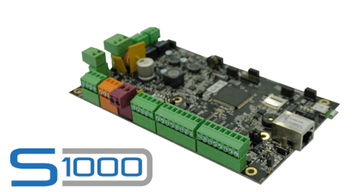

In a nutshell, the Internet of Things is the concept of connecting any device to the Internet and to other connected devices. The IoT is a giant network of connected things and people – all of which collect and share data about the way they are used and about the environment around them.
Devices are the principal physical objects that are related to the device. For Asset Control Systems, sensors are the communication layer components of the computer. These smart sensors continuously collect environmental data and forward the information to the next layer.The new half-conductor manufacturing techniques are capable of developing micro-smart sensors for different applications.
A Control Panel handles data traffic between various networks and protocols in two ways. Another control panel feature is to translate various network protocols and to make sure the connected devices and sensors are interoperable.
Internet of things creates massive data from devices, applications and users which has
to be managed in an efficient way. IoT cloud offers tools to collect, process, manage and
store huge amount of data in real time. Industries and services can easily access these
data remotely and make critical decisions when necessary.
Basically,
IoT cloud is a sophisticated high-performance network of servers optimized
to perform high-speed data processing of myriads of devices, traffic
management and deliver accurate data analysis. Distributed management
database systems are one of the indispensable components of IoT cloud
User interfaces are the visible, tangible part of the IoT system which can be
accessible by users. Designers will have to make sure a well-designed user interface
for minimum effort for users and encourage more interactions.
User interface design has higher significance in today’s competitive
market; it often determines the user whether to choose a particular
device or appliance. Users will be interested in buying new devices
or smart gadgets if it is very user-friendly and compatible with common
connectivity standards.
The IoT’s major significant trend in recent years is the explosive
growth of devices connected and controlled by the internet. The wide
range of applications for IoT technology means that the specifics can
be very different from one device to the next, but there are basic
characteristics shared by most.
There are many technologies that
enable IoT. Crucial to the field is the network used to communicate
between devices of an IoT installation, a role that several wireless
or wired technologies may fulfil.
Security is a critical element of IoT deployment, yet it is too often neglected
in the development of systems. Everyday vulnerabilities in IoT are being exploited
with malicious intent – yet the vast majority of them can be prevented simply
and cost-effectively.
A secure system starts with the practice of
eradicating vulnerabilities in IoT devices and equipping them with the
means to resist, detect and recover from malicious attacks.
Analytics is the process of converting analogue data from interconnected smart
devices and sensors into usable insights that can be processed, interpreted and
used for detailed analysis. Intelligent analytics are inevitable for IoT
technology for management and improvement of the entire system.
One
of the utmost advantages of an efficient IoT system is real-time smart
analytics which helps engineers to find out irregularities in the collected
data and act fast to prevent an undesired scenario. Service providers can
prepare for further steps if the information is collected accurately at the right time.
| Characteristics of IoT |
| Applications of IOT |
| The main components used in IoT |
| Advantages and Disadvantages of IOT |